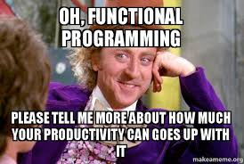
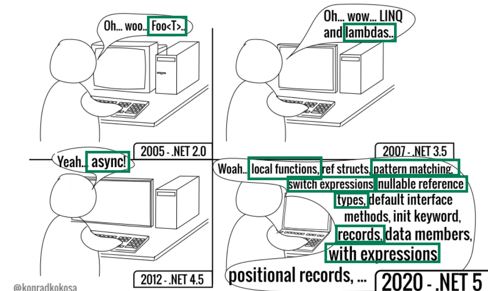
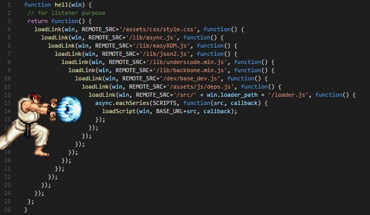
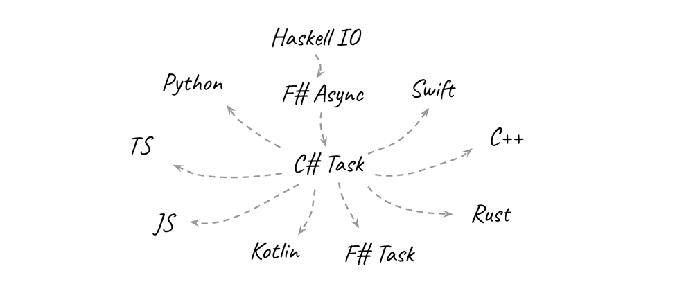

val fetchUrlAsync : url:string -> client:'a -> 'b
Full name: history.fetchUrlAsync
val url : string
Multiple items
val string : value:'T -> string
Full name: Microsoft.FSharp.Core.Operators.string
--------------------
type string = System.String
Full name: Microsoft.FSharp.Core.string
val client : 'a
val cachedVersionOf : originalFunction:('a -> 'b) -> ('a -> 'b) (requires comparison)
Full name: History.cachedVersionOf
val originalFunction : ('a -> 'b) (requires comparison)
val mutable cache : Map<'a,'b> (requires comparison)
Multiple items
module Map
from Microsoft.FSharp.Collections
--------------------
type Map<'Key,'Value (requires comparison)> =
interface IEnumerable
interface IComparable
interface IEnumerable<KeyValuePair<'Key,'Value>>
interface ICollection<KeyValuePair<'Key,'Value>>
interface IDictionary<'Key,'Value>
new : elements:seq<'Key * 'Value> -> Map<'Key,'Value>
member Add : key:'Key * value:'Value -> Map<'Key,'Value>
member ContainsKey : key:'Key -> bool
override Equals : obj -> bool
member Remove : key:'Key -> Map<'Key,'Value>
...
Full name: Microsoft.FSharp.Collections.Map<_,_>
--------------------
new : elements:seq<'Key * 'Value> -> Map<'Key,'Value>
val empty<'Key,'T (requires comparison)> : Map<'Key,'T> (requires comparison)
Full name: Microsoft.FSharp.Collections.Map.empty
val key : 'a (requires comparison)
val tryFind : key:'Key -> table:Map<'Key,'T> -> 'T option (requires comparison)
Full name: Microsoft.FSharp.Collections.Map.tryFind
union case Option.Some: Value: 'T -> Option<'T>
val value : 'b
union case Option.None: Option<'T>
val add : key:'Key -> value:'T -> table:Map<'Key,'T> -> Map<'Key,'T> (requires comparison)
Full name: Microsoft.FSharp.Collections.Map.add
val expandEnvVars : (string -> string)
Full name: History.expandEnvVars
namespace System
type Environment =
static member CommandLine : string
static member CurrentDirectory : string with get, set
static member CurrentManagedThreadId : int
static member Exit : exitCode:int -> unit
static member ExitCode : int with get, set
static member ExpandEnvironmentVariables : name:string -> string
static member FailFast : message:string -> unit + 1 overload
static member GetCommandLineArgs : unit -> string[]
static member GetEnvironmentVariable : variable:string -> string + 1 overload
static member GetEnvironmentVariables : unit -> IDictionary + 1 overload
...
nested type SpecialFolder
nested type SpecialFolderOption
Full name: System.Environment
System.Environment.ExpandEnvironmentVariables(name: string) : string
val factorial : _arg1:int -> int
Full name: history.factorial
val n : int
type Size =
| Pixels of int
| Percentage of float
| Auto
Full name: history.Size
union case Size.Pixels: int -> Size
Multiple items
val int : value:'T -> int (requires member op_Explicit)
Full name: Microsoft.FSharp.Core.Operators.int
--------------------
type int = int32
Full name: Microsoft.FSharp.Core.int
--------------------
type int<'Measure> = int
Full name: Microsoft.FSharp.Core.int<_>
union case Size.Percentage: float -> Size
Multiple items
val float : value:'T -> float (requires member op_Explicit)
Full name: Microsoft.FSharp.Core.Operators.float
--------------------
type float = System.Double
Full name: Microsoft.FSharp.Core.float
--------------------
type float<'Measure> = float
Full name: Microsoft.FSharp.Core.float<_>
union case Size.Auto: Size
Multiple items
module Option
from Microsoft.FSharp.Core
--------------------
type Option<'T> =
| Some of 'T
| None
Full name: history.Option<_>
union case Option.Some: 'T -> Option<'T>
type Result<'T,'TErr> =
| Ok of 'T
| Error of 'TErr
Full name: history.Result<_,_>
union case Result.Ok: 'T -> Result<'T,'TErr>
union case Result.Error: 'TErr -> Result<'T,'TErr>
Early history of functional programming for .NET
- 1970-2024
- Tomas Grosup @ .NET @ DevDiv @ Microsoft

Who cares about FP anyway?

This is not a full history lesson
-
Backwards journey seen trough selected milestones:
- Asynchronous programming
- Generics
- Early .NET days
- Birth of F#
Peer reviewed history: https://fsharp.org/history/hopl-final/hopl-fsharp.pdf
- (and do approach me after the talk for more!)
Asynchrony - what is it good for?
- Continue with computation after "stuff" happens
- Let the thread do other useful work

Async/await (C# 5, 2012)
1:
2:
3:
4:
5:
6:
|
static async Task<string> FetchUrlAsync(HttpClient client, string url)
{
var response = await client.GetAsync(url);
response.EnsureSuccessStatusCode();
return await response.Content.ReadAsStringAsync();
}
|
- Ease of transition sync<->async!
- 1st big feature of Mads Torgersen
- Today an industry standard
How it came to be?
- Inspired by F# computation expression async{}

Computation expressions (F# 1.0, 2007)
1:
2:
3:
4:
5:
6:
|
let fetchUrlAsync (url:string) (client:HttpClient) =
task {
let! response = client.GetAsync(url)
response.EnsureSuccessStatusCode()
return! response.Content.ReadAsStringAsync()
}
|
- Author provides a *Builder type (task,async,seq,optional,..)
- Compiler desugars bangs (let!,match!,while!,...) into calls
- builder.Bind(expression, fun result -> rest of the code)
- Nesting & Composition
Generics (.NET 2.0, 2005)
- Programming with data types "to be specified later"
- Key enabler for Collections, LINQ, TPL, Span
Before
1:
2:
3:
|
ArrayList list = new ArrayList();
list.Add(42);
int value = (int)list[0];
|
After
1:
2:
|
List<int> list = new List<int> { 42 };
int value = list[0];
|
What is so FP about generics?
-
Pioneered in ML in 70s
- ML = Ancestor of F#,OCaml,Elm,Haskell,SML
- Strongly typed FP with type inference needs it
-
Called 'Parametric polymorphism' in FP
- Complements 'this' polymorphism
1:
2:
|
// public virtual List<T> GenericMethod(T)
var result = this.GenericMethod(x);
|
Generics and type inference
- Every symbol starts as a generic type parameter
- Example: Generic caching decorator
1:
2:
3:
4:
5:
6:
7:
8:
9:
10:
11:
|
let cachedVersionOf originalFunction =
let mutable cache = Map.empty
fun key ->
match cache |> Map.tryFind key with
| Some value -> value
| None ->
let value = originalFunction(key)
cache <- cache |> Map.add key value
value
let expandEnvVars = cachedVersionOf System.Environment.ExpandEnvironmentVariables
|
How landed in .NET?
- Don Syme from Microsoft Research
-
Specifically designed (1998) to support FP languages on .NET
- Not an accident!
- Needed by Project 7 (wait for it.. :-))
- Unlike GJ in JVM, using JIT!
Early .NET
- MSFT: C,ASM,BASIC
- Loss of Java license (J++), OO wave
-
COM+ 2.0 -> Lightning -> .NET
- Regular Bill Gates reviews
- Key decision: Multi-language runtime
- +new COOL
Project 7
-
Approach industry and academia for 7+7 ports
- COBOL, Perl, Python, Ada
- Eiffel, Mercury, SML, Haskell, OCaml, Scheme, Alice
- ( OOP , Logic , ---------- ML ------------ , LISP, Concurrency)
Interop is good, but hard
- Academical languages needed libraries, frameworks, tools
- BUT: 2 runtimes, 2 GCs ?
- Type systems compatibility
- Haskell.NET: 'Dirtyness' of .NET a problem
Birth of F#
-
Started as OCaml.NET by Don Syme
- Do a fresh .NET language with its own identity
-
Main ancestor line:
-
OCaml (1996, Object features)
-
Caml (1985)
-
ML (early 70s, Generics, Strongly typed)
- LISP (1958, GC, Recursion)
F#
1:
2:
3:
|
let rec factorial = function
| 0 -> 1
| n -> n * factorial (n - 1)
|
ML
1:
2:
|
fun factorial 0 = 1
| factorial n = n * factorial (n - 1);
|
LISP
1:
2:
|
(defun factorial (n)
(if (= n 0) 1 (* n (factorial (- n 1))))
|
Are the parens right?!
Next big thing?
1:
2:
3:
4:
5:
6:
7:
8:
9:
|
type Size = Pixels of int | Percentage of float | Auto
type Option<'T> =
| Some of 'T
| None
type Result<'T,'TErr> =
| Ok of 'T
| Error of 'TErr
|
The end
- FP found its way into mainstream
- Not the case 25y ago!
-
Want to enjoy it even more?